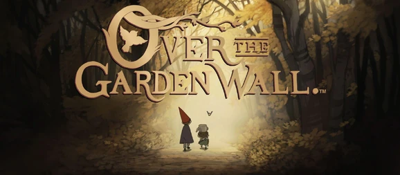

Over The Garden Wall
The story features two half-brothers, Wirt and Gregory, who have become lost in a mysterious wood called The Unknown and attempt to find their way home with the help of the Woodsman and Beatrice the bluebird. The atmosphere in The Unknown is generally menacing although there are many moments of playful whimsy. Many of the episodes are rooted in folktales and children’s stories from the 19th and early 20th centuries while the style of animation and storytelling borrow heavily from early cartoons. The series is inspired by myths and old wives' tales that have been passed down throughout the years.